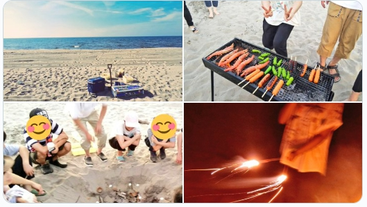
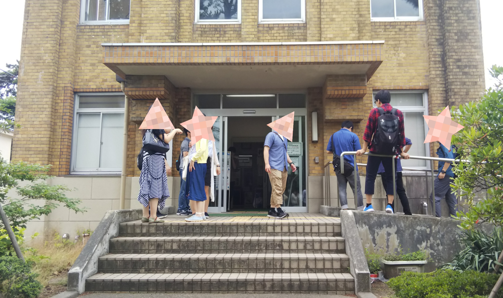

活動報告
浜コン2019 8/7
今年も浜コンを開催しました！
例年同様部会で部員が作成した土器を浜の流木を集めて焼き、ついでにBBQをしました。
天気は幸か不幸か快晴、全員汗だくの状態で準備完了
土器は縄文時代当時の焼き方を参考に、浜に穴をほって中心に火を焚き、周りに置いて焼きます。画像左下が土器を焼きつつマシュマロを炙る様子です。
BBQも終わり、あたりが暗くなってきてからみんなで花火もしました！！
暑さで全員死にかけてましたがとても楽しかったです！
6月巡検 6/23（日）
本日は新入生歓迎会もかねて旭町学術資料館と新潟市歴史博物館みなとぴあに行ってきました～
今回は20人近くの参加者がいたので安心しました…
まさかの部長の遅刻というハプニングが起きましたが、部長はおいて定刻活動開始です！
まずは旭町資料館へお邪魔しました。新歓でここを訪れるのは毎年恒例です！
午後はみなとぴあまでみんなでお散歩しました。
部員一同新潟の歴史に触れるとても良い機会となりました！
